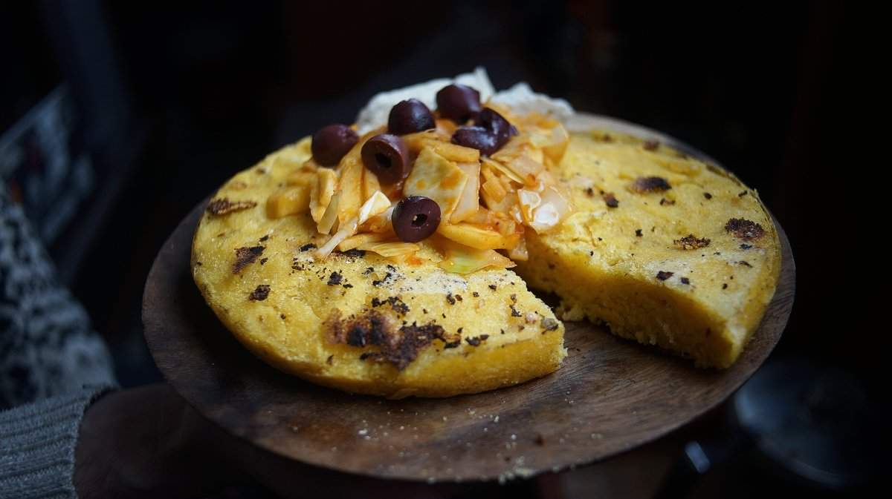

corn pone
1 big corn cake — 25 minutes
Corn pone has been part of our diet since 2016, ever since our good friend Claudia from the sailboat Essencia made some for us.
Corn pone is a simple version of cornbread, it is heavy, crunchy and thick, rather than fluffy and light.
This recipe is versatile, we use whatever vegetables we have on hand for the topping. If we have kimchi, we put kimchi, but this recipe is also delicious with chipotle peppers in adobo sauce, or with the vegetables sautéed with dried chili pepper flakes. In the above photo, we added black olives because we had some.
Instead of making one big corn cake, you can divide it into 4, or 8 smaller cakes. It's possible to eat them as is, without a topping, with or without a dollop of vegan butter.
Oven version
To prepare corn pone in the oven, preheat oven to 190 °C (375 °F). Preheat cast iron skillet in oven, then spread mixture in skillet. Bake for 30 min, or until edges start to brown.
 cornmeal150 g
cornmeal150 g olive oil15 ml
olive oil15 ml salt1.25 g
salt1.25 g waterboiling, 250 ml
waterboiling, 250 ml
mix
- Place 150 g (1 cup) yellow cornmeal, 15 ml (1 tbsp) olive oil (or other neutral oil, like canola), and 1.25 g (1/4 tsp) salt in a bowl. Pour 250 ml (1 cup) of boiling water over the cornmeal mix, stir well. The cornmeal mix should be wet, and easy to form into shapes. If it isn't, add more water.
- Cover bottom of a 20 cm (7 in) cast-iron skillet with some olive oil, bring up to medium heat. When the oil is hot, press the cornmeal mix into the pan, and fry until bottom is browned. Put a plate over the top of the pan, keep your hand on the plate and flip the pan so that the corn cake ends up cooked side up on the plate. Then, slide the corn cake back into the pan (cooked side up).
- Brown bottom for an additional 4 to 6 minutes, or until well-cooked. Cut corn cake into two, and slide into two bowls. Instead of making one big corn cake, you can divide it into 4, or 8 smaller cakes.
- As a topping, we like to add whatever vegetable we happen to have on hand. Green cabbage (or red), rutabaga, daikon, carrots or potatoes, all work well. The rule is to cut them small and even so they cook fast, and so they cook through. As flavoring, we sautée garlic and yellow onion in a pan first, along with either kimchi (we make kimchi often) or half of a 7oz can of chipotle peppers in adobo sauce. Then, we sautée everything together in a pan until well-cooked.